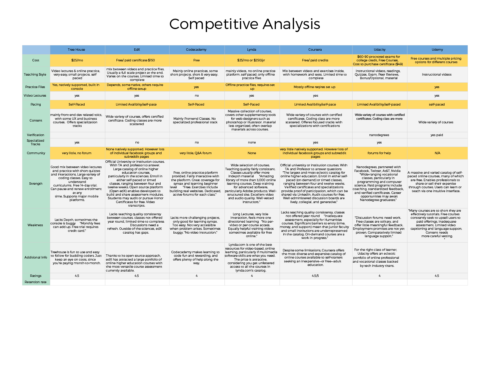
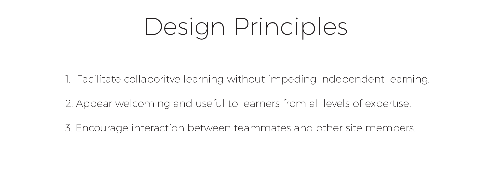

Designation
Huddle is a conceptual online learning platform that facilitates the desire for social interaction when learning outside of a traditional classroom. I was the UX and IxD designer in a team that consisted of one other UX designer and two UI designers.
The first task our team did was a competitive analysis on other online learning platforms. We discovered that our main competitors were Lynda.com, Treehouse, Codecademy, and EdX. After researching the domain of the project, we decided to interview online learning users about their frustrations and needs when using an online learning platform. We also utilized surveys to gather large amounts of quantitative data that we could use in addition to the qualitative information collected from the user interviews.
To synthesize the research we did, we used affinity diagraming to find patterns among the information we gathered. We then translated the key findings into our design principles we would follow when creating the product.
Based off of the key data from our interviews and surveys, we embodied the findings into two user personas. These personas would be used to represent our demographic and remind us of the needs of our users.
Persona 1 - The Social LearnerFrom there we developed wireframes that we used to user test. We wanted to implement a way to feel a sense of community. One of the challenges we faced was trying to create a system where users would be in a group and learning the same material, but without sacrificing the time flexibility that online learning excels at.
Our solution was to place users in small groups that would start at a designated week, but the users could complete the material at the course at their own pace. I also designed the huddle button interaction that allowed users to have a central focus for all the group interactions and remind them that they were not alone when going through the course.
After several rounds of user testing and iterations, we developed our hi-fidelity prototype.